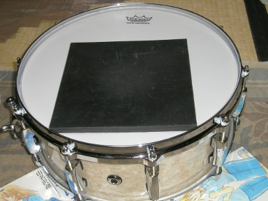
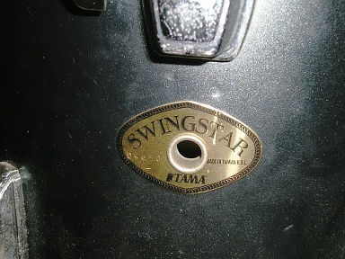
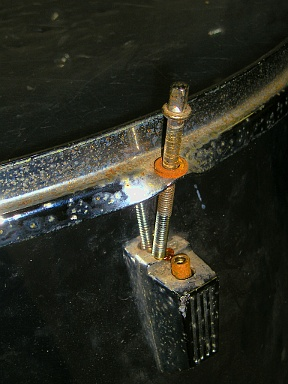
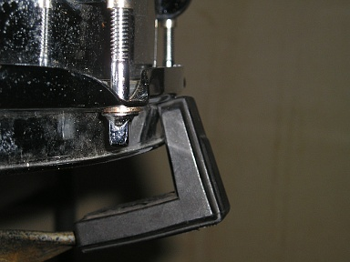

2012 年
03 月 01 日 ( 木 )
昨夜お嫁にきた Pearl の Masters Custom MCX1455S/C を、午前中に仮チューニングしました。
バターサイドのヘッドのチューニングで済むかと思っていたのですが、なぜかチューニングボルトが 1 本だけ指で回せる状態だったので不審に思い、ヘッドを全て外していろいろ確認することにしました。
まずはラグを止めているネジのチェックをします。案の定ネジが全てゆるんでいます。すべて締めてやります。ひょとしてと思い、ストレイナーを固定するネジをチェックすると、こちらも若干緩んでいます。これも締めてやります。そしてバターサイドのヘッドを仮つけします。
またスネアサイドのヘッドもゆるゆるだったので、こちらを先にチューニングをし直しました。最初にスネアの鳴りがおかしかったのは、どうやらスネアサイドのヘッドがゆるゆるだったためのようです。
そしてバターサイドのヘッドのチューニングを済ませると、スタイルだけでなく音もおしゃれさんになりました。めでたしめでたしです。今日のところはあくまで仮チューニングですけど。本チューニングは後日スタンドにセットしてからです。
ひとつだけ気になっていることがあります。
私がチューニングする前の状態で、店舗にならんでいたのか、それともそうでないのかということです。
もしあの状態で店舗にならんでいたのなら店頭での試奏は意味がありません。チューニングされておらず、ラグやストレイナーの取り付けネジが緩んですらいるのですから。
配送にあたってテンションをゆるめておいたと好意的に解釈したいところですが、ラグやストレイナーのネジの緩みはどうなんでしょう。適当にとめただけのようにしか思えないところです。この状態で店頭で試奏を勧められても「何かがおかしい」ということがわかるだけです。
みなさん Pearl Masters Custom MCX1455S/C ですが、どうせなら家でも鳴らしたいですよね。私は鳴らしたい派です。
それで、「お家でドラミング」を目指してこんなことを試してみました。

練習用ゴムパッド登場。
結果。
あきませんわ。
シェルとスネアサイドのヘッドがあるために共鳴して、ゴムパッドオンリーで使ってたときより、かなりでかい音がします。当然といえば当然の結果です。逆にこの子はよく鳴ってくれるいい子であることが証明されました。
ここは素直に白井式を導入すべきなんでしょうね。下の動画はシンバルの消音の解説ですが、スネアに注目です。
消音したらその楽器を鳴らしていることにならないなどと、まっとうな指摘をしてはいけません。ちゃんとした楽器を持ってることが大事なんです！！きっとたぶん……
03 月 07 日 ( 水 )
くどいようですが、ここはドラム関連サイトではありません。4 月も終ればドラムネタは落ち着くでしょう。
メンバーの健康状態がかんばしくなく、今日のリハも中止になってしまいました。4 月に間に合うのか不安ですが健康でないと音楽はできません。ダメだったらダメでそれでいいのだと自分は思います。そもそも、あくまで私はサポート・メンバーですし。
リハはできませんでしたが、逆境を利用してセットのチューニングをしてきました。災い転じて福となすです。
それとついでに例のブツの写真を少しばかり撮ってきました。
セットですが TAMA の Swingstar だということが判明しました。TAMA のサイトでみると廉価版にせよ綺麗なセットです。今使っているセットがこれと同じものだとは思えません。
下の写真はフロアタムの一部です。エンブレムの上と画面左下にラグが映っています。トップ用のラグとボトム用のラグの形状が異なっているのがすこし変っています。ラグ表面の白いプツプツはすべて錆です。

さらに下の写真をみると、この楽器がどれくらい傷んでいるのかがわかると思います。映っているのはドラマーならすぐにわかると思いますが、フロアタムに取り付けられたフープとチューニング・ボルト、ラグです。ちなみに写真はボトム側です。

フープ、チューニング・ボルト、ラグ、チューニング・ボルトのナットが錆で赤茶けています。これをメンテナンスする人間はどこにもいません。メンテナンスの必要性を理解しているのは、恐ろしいことにおそらく私だけです。しかしメンテナンスを求めても拒絶されるでしょう。シンバルを磨くだけのことすら、そこでは拒絶されるのですから。
それと 10 inch の Tom のボトム側のヘッドとフープが見当たらないので、不可解に思いながもこのセットではそうなのだろうと思っていたのですが、メーカーのサイトで確認したところ、やはりどこかの馬鹿野郎が外して紛失したようです。これじゃぁ 10 inch Tom 鳴らねーじゃん！！
シェルだけはすごく綺麗でした。ウッド・シェルだったのが幸いだったようです。ちなみに材はポプラです。
あとヘッドですが、すべてボコボコにへこんでいます。スティックのチップの形をしたへこみがいたるところにあります。ヘッドをまるで手締めしただけかと思うくらいにゆるゆるにして、音量を出すためにおもいっきり力任せに叩いていたのでしょう。まともな音が出るはずがないのに。
スネアのヘッドも外してみると、バターサイドは中央部がたるーんとへこんでいます。もっと早くに交換しろよと思わなくもないのですが、まぁこれはよく見かけることなので肩を落しながら仕方がないと思える範囲です。
が、スネアサイドのヘッドに打痕があるのはなぜなんでしょうか。打痕といってもスティックのニスの痕とか生やさしいものじゃぁありません。スティックのチップ型のへこみがもろについてます。スネアサイドのヘッドを叩くなよ！！破れるじゃん！！素人かよ！！
あとスナッピーも伸びてしまってだめになってしまっていました。まぁ、これも寿命と思えなくもありません。交換したいのですが、メンテナンスすら許されていない楽器なのでどうしようもありません。
まぁ、そんなひどい状態の楽器ですが、できるだけのことはやろうとチューニングだけはしっかりとやってきました。おかげでそれなりにちゃんと鳴ってくれるようになりました。鳴ってくれるようになったような気がします。
実際にはヘッドがぼろぼろなのでまともな音のはずがありませんが、ヘッドにテンションが加わった分ましになったような気がします。もちろんちゃんと鳴ったように錯覚してるだけというのはわかっています。ましになったと思わせてください。とりあえず頑張ったかいがあった……と信じたい……まじに信じたい。
しかし、あのヘッドを意味なくゆるゆるにするのは、本当に勘弁してください。音も楽器も死にます。
それと先月某ドラム・テックさんの技をパクってスネアを快音にしたと書きました。具体的にどうしたのかというと下の写真のようにしました。


フープの段差を利用して、スネアをスタンドのアームの先端に乗せるようにするんです。もちろん実際には少し締めてます。
このようにセッティングすることで、スタンドのバスケットとスネアが接する面積が減って、スネアの鳴りが最大限引き出されます。サスティーンは伸びますし、クローズドリムショットの鳴りも明かによくなります。
このセッティングですが、TAMA と YAMAHA のフープではできることが確認済みです。私の Pearl のメイちゃん ( メイプル・シェルだから ) のフープは TAMA や YAMAHA のフープほど段差がくっきりとついていません。なめらかなカーブを描いています。もしかするとこのセッティングはできないかも、と思っていたのですが、できることを今日確認してきました。
あぁ、それともうひとつ信じられない光景を目にしてきました。某所のスタッフがビーターシャフトをわしづかみにして、ペダルをぶらぶらさせながら運んでいました。「何その楽器の扱い！？ゴミか何かと思ってんの！？」とその場で固まってしまいました。やっぱり素人に楽器をさわらせてはいかんですね。
とりあえずポプラをシェルに使っているこの可哀想なドラムセットのことを、今日から自分はポプラちゃんと呼んでやろうと思います。ゴミのように扱われて満身創痍な可哀想なこの子を、自分だけでもよしよししてやります。
03 月 10 日 ( 土 )

うぉっ！！発掘した！！見つけた！！足元にあった！！言ってることがわかんないと思うけど、ともかく灯台下暗しで部屋のなかでみつけた！！20 年気付かなかった！！あほや！！でもプレイヤーがない！！どうしよう！！
これまたツボにくる 71 さんの作品。ライブ感というか空気感がすごくいいですよね。pixiv のアカウントがない人はこちら
今日は某所でこのサイトのローカル側の HTML ファイルを Firefox で眺めていたのですが、スネアのあたりのところを眺めていると「ミスチルやりません？」と以前オファーを打診してきたとある人に、なんかいろいろ訊かれました。それで某所のドラム・セットのことやら、なんでこういうセッティングにするのやら、いろいろ説明していたのですが．．．．．
「そのドラムは Pearl ですか？」
と突然今日初対面の人が話しかけてきました。
ポプラちゃんは Pearl ではないので
「いえ、TAMA ですよ」
と答えたところ突然
「村上ポンタ秀一って知ってます？」
と訊いてくるので
「もちろんです。日本のドラマーにとっては神様みたいな人です。個人的にはポンタさん、力哉さん、神保さんは ( 以下話が超長くなるので省略 )」
それで会話も長くなるので省略するわけですが、こういった会話の流れに懐しさを感じました。
「○○知ってる？」「ほんなら○○さんの○○ってアルバム知ってる？」
これって中学生、高校生の頃の「お前、こんなん知ってる？こんなんどう思う？」という布教活動に似てるわけですよ。
相手の話してた内容に関する ( それ遠州つばめ返しだよ、とかの突っ込み ) コメントは差し控えますが、楽しい時間を過ごさせていただきました。
音は正直だ。ごまかしはきかない。全て音にでてしまう。だから音に耳をかたむけ、音に謙虚であろう。
flickr でみつけた謎のおじさん。自分もおじさんだけど。
なんで車の外じゃなく中で叩いてるんだろう。東京恐るべし。

03 月 18 日 ( 日 )
むっちゃかわいいwww
ヘッドホン推奨ですwww
しかしストロークはどういう仕組みなんだろうwww
03 月 19 日 ( 月 )
今日は多くの小学校で卒業式だったようです。卒業おめでとう。
03 月 20 日 ( 火 )
ネタ動画ではあるんだけど、支点周辺のメカニズムは、ちょっと画期的。特許取って製品化してもいいんじゃないだろうか。いや、まじで。
03 月 21 日 ( 水 )
さようならポプラちゃん(何
パワフルな声っぽくて、いいっすなぁ。
03 月 23 日 ( 金 )
ポプラちゃんとさよならするわけだけど、やっぱりポプラちゃんはこのあと素人連中に凌辱されてまうんやろか…